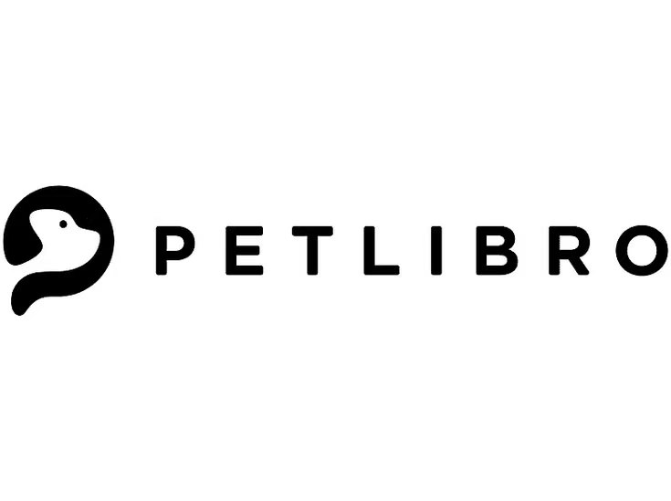
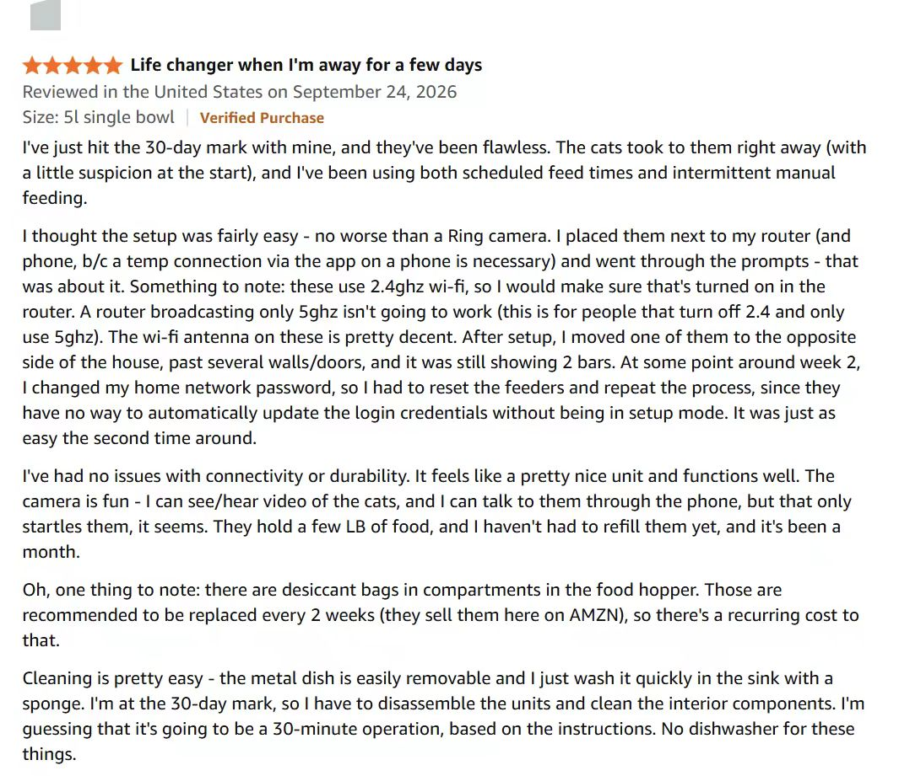
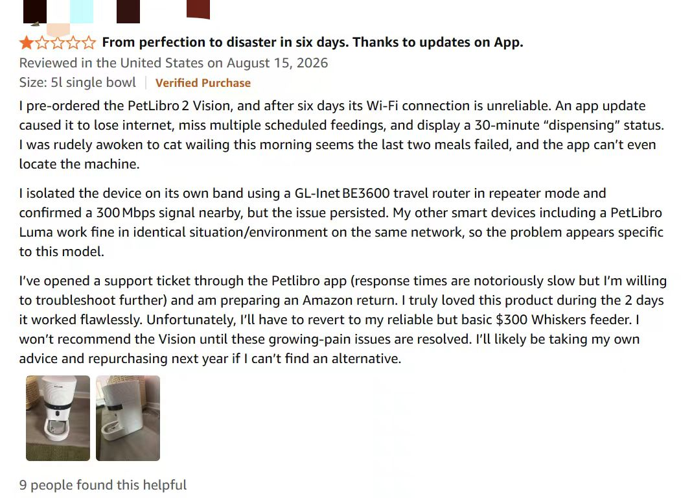
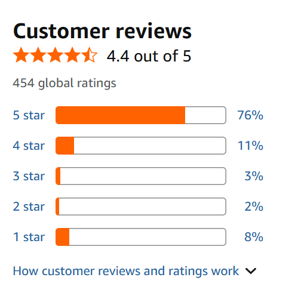
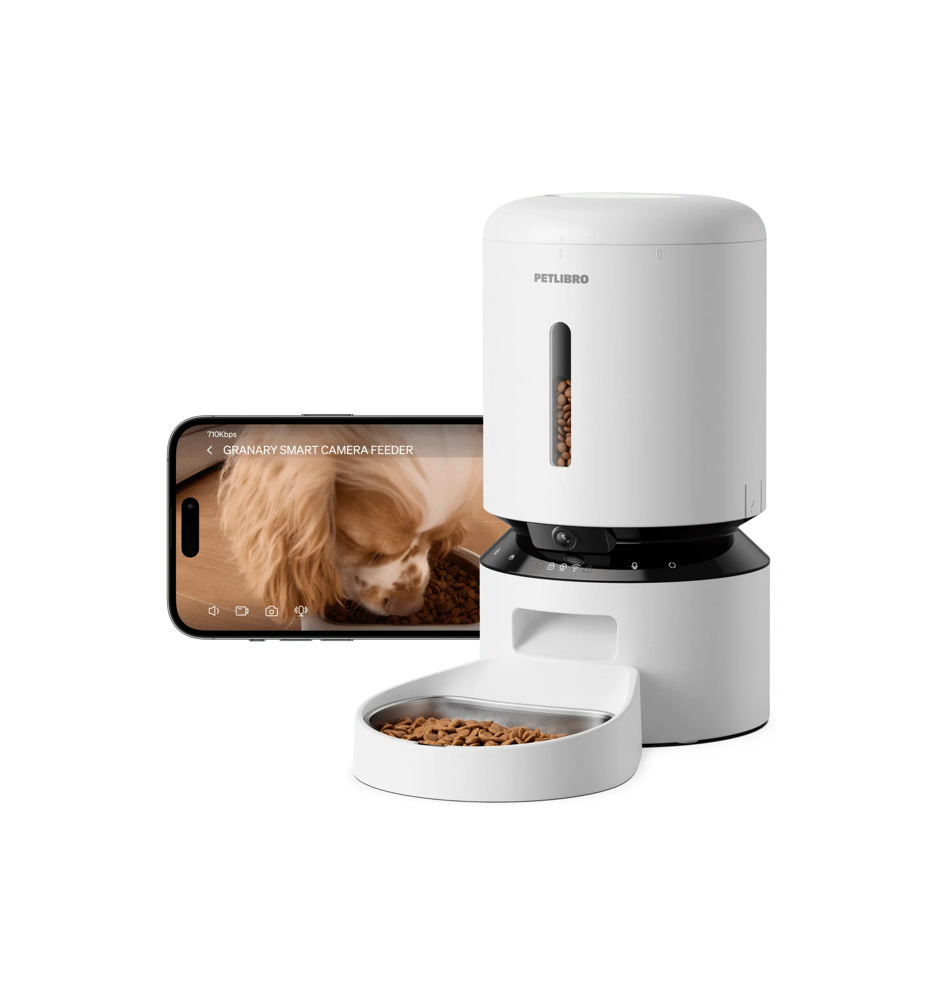
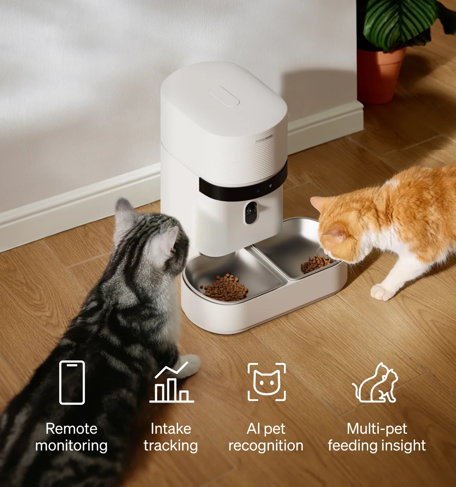
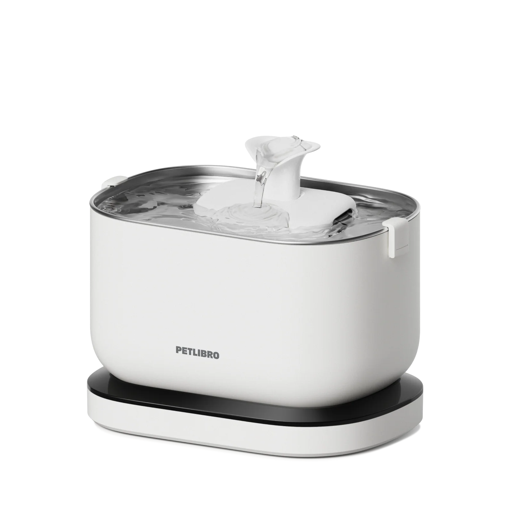
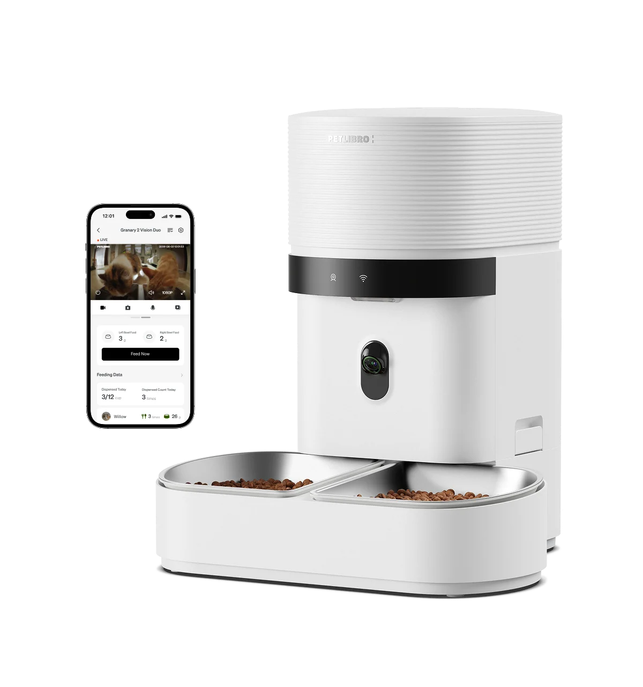

Independent Case Study Public Information ResearchFrom Content Research to a
Creator-Led Commerce Engine
PETLIBRO shows how different creators and content formats move a pet-tech product from "seen" to "understood" to "purchase-intent" — with TikTok Shop and affiliate as the closing layer.
Independent research based on public sources (Amazon, TikTok, YouTube, Trustpilot, Reddit). Not PETLIBRO internal data; no affiliation. Third-party estimates used as background only.
A Pet-Tech Brand in the Content-Commerce Era
PETLIBRO (Shenzhen LeMuLuo Tech, founded 2019) operates in smart pet hardware: automated feeders, fountains, litter boxes. Distribution is omnichannel — Amazon (category Best Seller #1), Chewy, Target (~375 stores), Best Buy, DTC via Shopify, and TikTok Shop US.
The opportunity angle is not "regional expansion" but content-triggered consumption: short-video creators surface problems owners didn't know they had, then close the path to purchase inside the same app via TikTok Shop / affiliate links.
What Users Actually Say

Amazon positive review: convenience and pet care
Amazon friction review: app and connectivity issuesRating baseline: Amazon Granary 2 Vision Duo snapshot shows 4.4/5 (454 global ratings, 8% 1-star); Trustpilot 3.8/5 (841 reviews, 28% 1-star). Most in-use buyers rate positively — Friction is a managed risk, not a thesis contradiction.

Amazon snapshot: Granary 2 Vision Duo 4.4/5 (454 global ratings, 8% one-star).One SKU, Many Angles
In sampled public content, the same SKU appears across multiple content expressions emphasizing different features and creator styles — not "one video does everything."
Granary camera feeder
Classroom reward screen-cast (C01) · multi-cat diet + explanation (C02) · cat operating the machine itself (C04)

Granary 2 Vision Duo
Weighing/recognition data (C07) · 13-year-old cat story (C08) · "Feeder exposed" reverse-hook (C10)

Dockstream (counterexample)
Its 5 sampled posts almost all converge on Education — one core narratable dimension ("moving water").

Caveat (R13 falsification review): no brief, selection criteria or backend data proving PETLIBRO deliberately assigned these "jobs." Diversity is also explained by product richness, organic UGC and creator style — attribution is unresolved. Presented as an Author Framework, not verified operator strategy.
Sample Roles
C01 @madisondemayo
Teacher screen-cast cat as classroom reward — 1.8M views. Organic UGC can generate huge reach.
C02 @ayypatrick
"How hard to manage several cats' diets?" → 2M views, comment section full of purchase inquiries.
C03 @lunatheminicockapoo
Picky dog + Dockstream before/after — 310K views, "only drinks running water."
C04 @grant.mooney
Cat taught itself to operate the feeder — 3.7M views. The pet carries the demo role.
C05 @girlsandtheircats
Daily pet life with feeder/fountain; lower differentiation, AI-risk flagged.
C06 @withpyaari
"Upgraded with Dockstream 2" — softens the ad feel.
C07 @melodyandjiggy
Granary 2 Duo weighing & recognition data — 5.9K likes. Builds credibility via proof.
C08 @imluckytran
13-year-old cat "Pudgy" eating-story — 1.6K likes. Same Duo SKU, emotional angle.
C09 @ringodanyan
Duo camera caught Ringo eating daily — 1M views. "Seeing the pet" is the selling point.
C10 @bryanthediamond
"Feeder exposed…" contrast hook — 16.3K likes. Adds hook diversity to the Duo group.
Turning a Content Insight into an Executable Brief
This is not a PETLIBRO internal document or a real campaign brief. It is an author framework example derived from public research — showing how I would turn an observed content angle into an actionable creator task.
1. Creator and audience fit
Select a creator whose regular content revolves around multi-cat households, pet-care knowledge or pet behavior (see sampled role C02). The audience should already expect actionable pet-care advice from this creator, not just entertainment.
2. Content objective
Move the product from "seen" to "understood": help viewers grasp the real pain point of feeding multiple cats separately, and present the product as one solution.
3. Product feature to demonstrate
App remote feeding, camera check, scheduled/meal splitting, and stainless-steel bowl. The focus is not spec lists but showing "two cats getting the right portions at different times."
4. Realistic usage context
Set the feeding schedule before leaving in the morning; check via camera during the day that each cat ate; refill kibble in the evening. The scenario must include a real home environment and cat behavior.
5. Creative angle and opening hook
Problem-first hook: "The most annoying thing about two cats isn't running out of food — it's one always stealing the other's." Then show how the product solves it, rather than praising the product first.
6. Required info and claims to avoid
Must mention: stable Wi-Fi needed, app setup steps, warranty terms. Avoid: claiming it "completely solves" food stealing, implying medical benefits, using unverified sales figures.
7. Evidence / response signals
Publicly observable: comments such as "my two cats do the same" or "how do I set meal splitting"; save and share rates vs. the creator's average. Not publicly verifiable: clicks, conversion, GMV, ROAS — require internal data.
Boundary: This is an illustrative framework. Existing research cannot prove PETLIBRO used the same brief for C02 or any other creator, nor can it prove the causal conversion effect of this content angle.
What Is Observable Where
@petlibro ~181–183K followers; real pet-life & creator-spontaneous dominate. Skit formats avg 100K+ views.
ObservablePet & tech reviewers (cats.com long review, 90-day test) provide rational Consideration.
ObservableCategory Best Seller #1; Granary 2 Vision Duo Amazon snapshot 4.4/5 (454 global ratings). Dominant visible transaction arena vs TikTok Shop.
ObservableStorefront exists; third-party estimates ~2,232 creators, ~1,081 livestreams. Real GMV/attribution Unavailable.
Inference / UnavailableWhat the Content Demonstrates

App remote feeding
Dispense food & two-way view/voice-call pets remotely.
RFID / recognition
Identify individual cats, track intake/weight — answers multi-cat food-stealing.
Camera & clarity
1080P HD, stainless-steel bowl, twist-lock lid (third-party reviews).
Fountain tracking
Dockstream / 2 moving-water fountains with real-time drinking data.
AI-vision litter
Luma ($599.99, Nov 2025) — "cleanup-anxiety peace of mind."
Managed friction
Wi-Fi disconnects, app freezes, firmware, warranty-term confusion — pre-set in scripts.
Turning Observation Into Action
1 · Split jobs per SKU
High-dimension SKUs support Education/Data/Emotion/Reverse-hook; low-dimension SKUs converge on one strong Education angle.
2 · Pre-manage Friction
Brief creators to show realistic setup, acknowledge connectivity needs, set post-purchase expectations.
3 · Verify the CTA
Capture at least one independently verified TikTok Shop / affiliate link per campaign to close the loop with evidence.
4 · Treat organic UGC as a channel
C01 (1.8M) and C04 (3.7M) outperformed many sponsored posts — detect & amplify, don't only pay.
Days 1–7 Audit & tag SKUs by narratable dimensions → 8–14 Write per-SKU briefs with complementary jobs + friction line → 15–21 Pilot with tracked links, confirm one verified in-app path → 22–30 Measure observable engagement + verified CTA, expand winning angle.
How to Evaluate Creator Content's Contribution to Purchase Decisions
This section is also an author-proposed evaluation framework, not PETLIBRO's verified campaign data. The core is separating signals that are publicly observable from metrics that require internal access.
Metrics observable for sampled content: views, likes, comments, shares, saves, and the nature of comments (purchase inquiries, setup questions, resonance, skepticism). These signals are visible but only reflect engagement, not conversion or creator effectiveness.
Tracked link clicks, product-page visits, attributed orders, conversion rate, CAC, ROAS, retention. These are unavailable in the current public research; any campaign-level efficiency judgment requires internal brand data.
| Content objective | Observable signal | Additional data required | Interpretation boundary |
|---|---|---|---|
| Attention / Reach | Views, shares, saves | Creator historical average, post timing, platform algorithm context | High reach ≠ purchase intent |
| Product understanding / Meaningful engagement | Setup/feature questions in comments, save rate | Comment sample, sentiment labeling | High engagement ≠ conversion |
| Trust / Purchase consideration | Positive UGC, purchase-intent comments, Amazon/Trustpilot ratings | Platform verification, review timing distribution | Correlation, not causal attribution |
| Clicks / Conversion (if tracked) | Tracked link clicks, TikTok Shop page interactions | Internal attribution data, GMV, CAC, ROAS | Not publicly verifiable in current research |
Framework goal: avoid equating "high likes" with "high sales," and avoid abandoning structured interpretation of public signals just because internal data is unavailable.
What This Case Actually Proves
Boundary: TikTok Shop + affiliate shorten the content→purchase path but act as a stacking layer on top of Amazon/DTC, not the sole engine. Conversion, GMV, ROAS, CAC remain Publicly Unavailable.